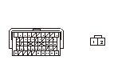

DTC P0713 (28-4)
DTC P0713（28-4）:
トランスミッション フルード温度センサ断線
トランスミッション フルード温度センサの電圧確認
1-1
HDSのATテスト モード メニューのデータ リストで、HMMF温度センサ（V）の電圧を確認する
◆ 4.93V以上か
YES
-
ステップ
2
へ進む
NO
-
一時的な故障
TATF回路の点検
2-1
イグニッション スイッチをLOCK(0)にする
2-2
トランスミッション フルード温度センサ カプラの接続を外す
2-3
トランスミッション フルード温度センサ カプラの No.2端子とボディ アース間をジャンパ ワイヤで短絡させる
2-4
イグニッション スイッチをON（II）にし、HDSのAT テスト モード メニューのデータ リストでHMMF温度センサ（V）の電圧を確認する
◆ 約0.07V以下になったか
YES
-
ステップ
3
へ進む
NO
-
ステップ
4
へ進む
SG2回路の断線点検
3-1
イグニッション スイッチをOFFにする
3-2
トランスミッション フルード温度センサ カプラの No.1端子とNo.2端子間をジャンパ ワイヤで短絡させる
3-3
イグニッション スイッチをON（II）にし、HDSのAT テスト モード メニューのデータ リストでHMMF温度センサ（V）の電圧を確認する
◆ 約0.07V以下か
YES
-
トランスミッション フルード温度センサを交換する
、交換作業終了後ステップ
5
へ進む
NO
-
PGM-FI ECUカプラB（49P）のNo.34端子とトランスミッション フルード温度センサ カプラ間のコードの断線、故障修理完了後ステップ
5
へ進む
TATF回路の断線点検
4-1
イグニッション スイッチをLOCK(0)にする
4-2
トランスミッション フルード温度センサ カプラからジャンパワイヤの接続を外す
4-3
HDSでSCS回路の短絡を行う
4-4
PGM-FI ECUカプラB（49P）の接続を外す
4-5
PGM-FI ECUカプラB（49P）のNo.28端子とトランスミッション フルード温度センサ カプラのNo.2端子間の導通を点検する
◆ 導通があるか
YES
-
PGM-FI ECUのプログラムが最新でない場合は、
最新バージョンにアップデートする
、プログラムが最新バージョンの場合は、
新品のPGM-FI ECUに交換して
再点検する
NO
-
PGM-FI ECUカプラB（49P）のNo.28端子とトランスミッション フルード温度センサ カプラのNo.2 端子間のコードの断線、故障修理完了後ステップ
5
へ進む
故障修理完了の確認
5-1
HDSでDTCのクリアを行う
5-2
Pポジションでイグニッション スイッチをON（II）にして20秒間以上待機してからエンジンを始動し、10 秒間以上待機する
5-3
HDSのATテスト モード メニューから、DTCs/フリーズ データのDTCモニタ ツールでDTC P0713（28-4）のOBDステータスを確認する
◆ 正常判定か
YES
-
故障修理完了
NO
-
ステップ
1
から再点検する
OBDステータスが未完了の場合は再点検する
